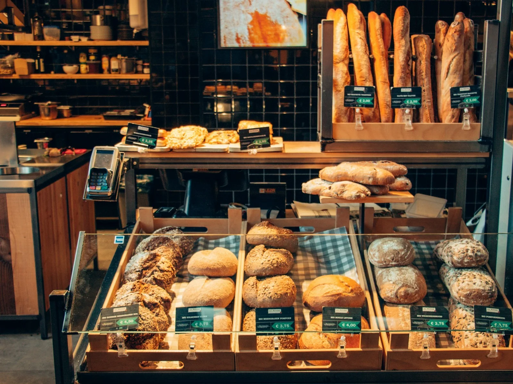

Savory
Breakfast Sandwich
Egg · cheese · house roll · rotating add-ons
9.50
Savory
Five savory bakery-café options designed around the same bread and pastry program.

Savory
Egg · cheese · house roll · rotating add-ons
Savory
Buttery crust · rotating vegetable or cheese filling
Savory
House focaccia · seasonal fillings
Savory
Flaky pastry · rotating savory filling
Savory
Rotating soup · slice of house bread
GOOD TO KNOW
Use the preorder flow when a specific item or quantity matters. Final pickup rules and availability should be verified before production.
Pre-order